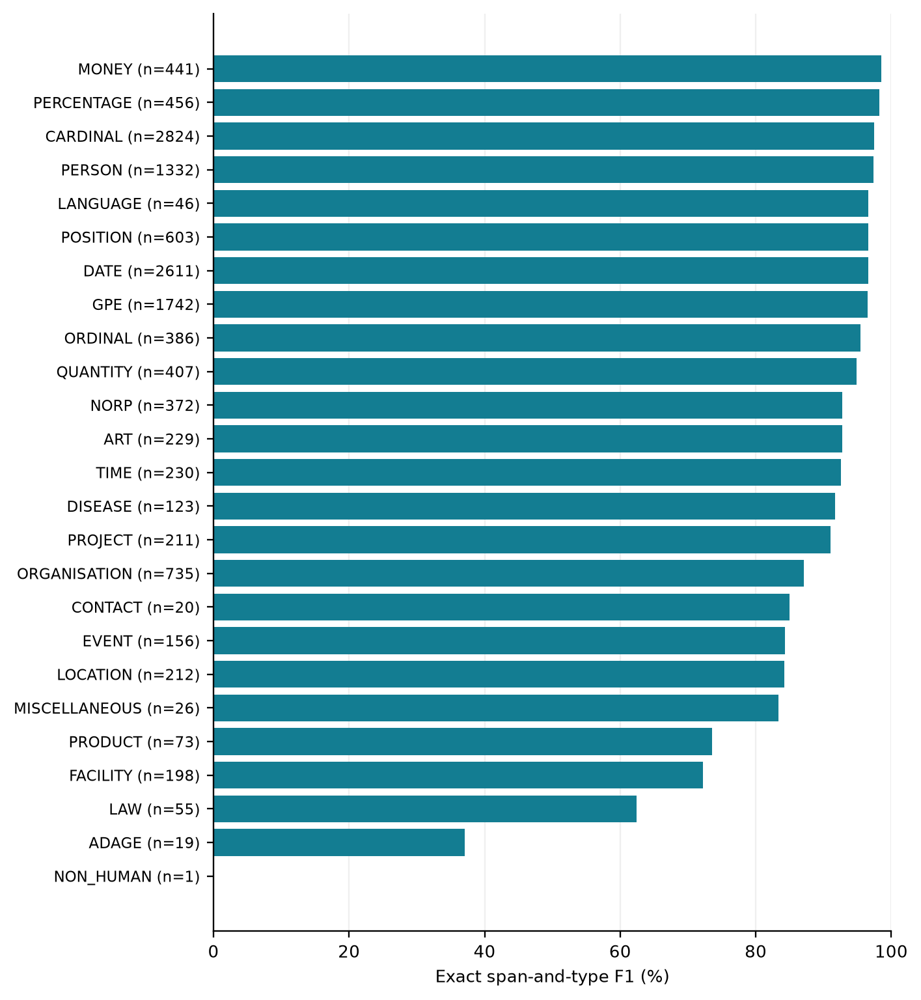

9 Sequence Labelling: POS Tagging, NER, and Chunking
After reading this chapter, you will be able to:
- Explain how POS tagging and morphological disambiguation interact in Turkic and when joint modelling is worth testing
- Describe the case suffix problem in Turkic NER, compare word-level and morpheme-level BIO tagging, and separate mention detection from name normalisation and entity linking
- Characterise the existing Turkic NER datasets (KazNERD, KyrgyzNER, Turkish datasets, WikiANN and others) as a dated inventory
- Prepare a reproducible NER fine-tuning procedure with XLM-R and the Hugging Face Trainer API, and name micro and macro F1 correctly when reporting results
- Design cross-lingual NER experiments that separate script, entity-distribution, domain and label-scheme effects
- Describe Turkish PropBank and distinguish overt-argument SRL from implicit-argument recovery in pro-drop languages
Sequence labelling assigns labels to tokens or spans. This chapter focuses on named entity recognition (NER): finding mentions such as people, organisations and places. It also covers POS tagging, phrase chunking and semantic role labelling.
These tasks use different labels. POS tagging assigns grammatical categories to words. NER marks mention boundaries and types. Chunking groups words into shallow phrases. Semantic role labelling identifies a predicate’s arguments and their roles.
Morphology matters in each task. Names can carry case suffixes, POS tags depend on the chosen word analysis, and omitted arguments require a separate treatment in semantic analysis. The examples below distinguish these linguistic issues from dataset-specific annotation rules.
9.1 POS Tagging and Morphological Analysis
9.1.1 POS Tagging and Morphological Disambiguation
POS tags capture some grammatical distinctions; morphological features supply others. This division applies to English as well as Turkic languages, and its details depend on the annotation scheme.
Choosing a full analysis also chooses a POS tag: selecting yüz+Num assigns UPOS=NUM. The reverse does not hold. Turkish evi can mean ‘his/her house’ or ‘the house (ACC)’; both readings are nouns. Joint models such as TurkishDelightNLP (Alecakir, Bölücü, and Can 2022) share information between POS and morphological prediction.
Compare joint prediction with a POS-only baseline on the same data. The neural morphology tutorial provides one joint tagging design (Section 7.6).
9.1.2 The UPOS Set for Turkic
UD uses 17 universal POS categories. The following distinctions need attention in Turkic annotation.
VERB vs. AUX. Turkish light verb constructions include yardım etmek “to help”, literally “to do help”. The status of verbs such as et-, yap- and ol- depends on the construction and the treebank’s annotation policy. Inspect those guidelines before combining datasets (Section 8.2). A disagreement between VERB and AUX can reflect an annotation mismatch; it can also be a model error within a consistently annotated dataset.
ADP. Postpositions are common in Turkic languages; both prepositions and postpositions are tagged ADP in UPOS. The postposition follows its complement nominal, so a strictly left-to-right model sees the postposition only after the nominal it relates to, the reverse of English order. Bidirectional encoders see both, so this matters mainly for incremental (left-to-right) taggers.
NOUN vs. PROPN. Proper names can take the same suffixes as common nouns, and a common noun can also be used as a name. Context helps distinguish them. Capitalisation and gazetteers provide additional evidence, but neither is required to be correct or complete.
PART. “Particle” is a linguistic description, not a guarantee of UPOS=PART. Turkish question mı/mi/mu/mü and additive da/de are written separately in standard orthography. Treebanks may assign different categories to them, including AUX for the question marker; inspect the selected treebank’s UPOS and dependency conventions rather than inferring them from a suffix-like pronunciation.
9.1.3 Evaluation Results Across Turkic Languages
Table 8.7 compares per-language Stanza models with a multilingual tagger. Its frozen manuscript snapshot reports higher UPOS for the multilingual system on Uzbek (71.8 → 87.6) and Kyrgyz (71.1 → 79.0). The scores cover matched words only, and the table includes gold and silver reference sets. Differences beyond multilingual training may contribute to the results; Section 8.4 gives the source and scoring conditions.
9.1.4 Cross-Lingual POS Tagging
Zero-shot POS tagging applies a model to a language without task-specific training on that language. The small Karakalpak and Kumyk samples in Table 8.7 illustrate this setup with proxy-language embeddings. Report per-tag errors as well as the overall score; shared suffix patterns cannot predict which POS categories will transfer best.
9.2 Named Entity Recognition in Agglutinative Languages
9.2.1 The Case Suffix Problem
Inflected names raise two separate questions: can a system recognise an unfamiliar surface form, and where should the annotated mention end? The first concerns generalisation; the second depends on the dataset’s boundary policy.
Capitalisation helps, but entities need not be capitalised. Informal Latin- and Cyrillic-script text may omit capitals. Perso-Arabic writing, including Ottoman Turkish, has no upper/lowercase distinction. NER therefore also needs contextual and lexical evidence.
Entities inflect. Names take suffixes, but not every mention has an overt case marker. An unmarked form is not necessarily a subject. The Kazakh city name Алматы (Almaty) illustrates the surface variation:
| Case | Kazakh form | Gloss |
|---|---|---|
| Nominative | Алматы | Almaty (unmarked) |
| Genitive | Алматының | of Almaty |
| Dative | Алматыға | to Almaty |
| Locative | Алматыда | in Almaty |
| Ablative | Алматыдан | from Almaty |
| Accusative | Алматыны | Almaty (object) |
A dictionary that matches only Алматы misses Алматыдан. A learned model may also struggle with inflected forms that are rare in its training data. Exercise 1 tests this by measuring the distribution of case forms and recall for each case.
Mention boundaries depend on annotation. Turkish Ankara’da contains the name Ankara and a locative suffix. A dataset may label the whole token or only the name. The apostrophe helps locate the suffix in formal Turkish, but informal Ankarada lacks it. Kazakh Алматыдан likewise has no separator. Follow the chosen annotation policy rather than assuming that every NER span must stop at the stem. The recurring Uzbek sentence (Table 1.4) has the same choice to make for Toshkentda ‘in Tashkent’, while Kazakh Қазақстан appears unmarked.
9.2.2 BIO Tagging Strategies
The standard BIO (Begin, Inside, Outside) tagging scheme labels each token as either the beginning of an entity span (B-TYPE), the continuation of a span (I-TYPE), or outside any span (O). Two possible labelling units are words and morphological segments:
Word-level BIO. Tag each word token with a BIO label, including the case suffix. Алматыдан → B-LOC. The entity boundary is the word boundary. This matches datasets whose mention spans include the suffix.
Morpheme-level BIO. Segment words into morphemes before tagging, then tag each morpheme. Алматы-дан → B-LOC, O. This example assumes a stem-only boundary policy. Possessive and derivational forms (Алматылық ‘from Almaty, Almaty-an’) need explicit rules. The cost is a morphological segmenter as a required upstream component, and the segmenter’s errors can affect mention boundaries (Chapter 6 and Chapter 7).
Neither strategy by itself produces a canonical name or an entity identity. Three outputs should be kept apart, as in this example:
| Output | Example for Алматыдан келдім ‘I came from Almaty’ | Task |
|---|---|---|
| Mention span in the original text | zero-based span [0, 9), Алматыдан, LOC |
NER (what datasets annotate) |
| Normalised name | Алматы | name normalisation (lemmatisation, rules for multiword and possessive names) |
| Linked entity | the city of Almaty, represented by an identifier in the chosen knowledge base, or unresolved | entity linking |
Score mention spans against each dataset’s own boundary policy, and evaluate normalisation and linking as separate tasks.
KazNERD (Yeshpanov, Khassanov, and Varol 2022) and WikiANN (Pan et al. 2017) supply token-level labels, so the tutorial uses word-level BIO. Yeniterzi’s Turkish CRF study represents a word as a root state followed by morphological-feature states, while constraining those states to preserve the word’s entity label. This is different from excluding suffixes from mention spans. Its morpheme-level and word-level scores were 88.94 and 88.71 F1; the difference was not significant (Yeniterzi 2011, 107–9).
9.2.3 Turkic NER Datasets
Table 9.3 is a dated inventory of the resources identified in a survey for this chapter (October 2026). It separates human annotation from weak supervision and automatic projection, because they support different conclusions. Where the table says a field is “not stated”, the source we checked did not give it.
| Language(s) | Resource | Annotation | Labels | Domain | Size | Access / licence |
|---|---|---|---|---|---|---|
| Kazakh | KazNERD (Yeshpanov, Khassanov, and Varol 2022) | human | 25 classes (IOB2) | TV news transcripts | 90,228 / 11,167 / 11,307 sentences (train/dev/test) | CC BY 4.0; github.com/IS2AI/KazNERD; HF issai/kaznerd |
| Kyrgyz | KyrgyzNER (Turatali et al. 2025) | human | 27 classes (25 occur in the release) | news (24.kg, 2017–2022) | 10,900 sentences: 7,033 train / 3,867 test, no dev; 16,819 entity spans (the paper’s 39,075 “mentions” count entity-tagged tokens) | Dataset CC BY-NC-SA 4.0; code and models MIT (README); github.com/Akyl-AI/KyrgyzNER |
| Uzbek | Uzbek Legal NER (Saidov et al. 2026) | semi-automatic candidates + staged human review; synthetic records for rare labels | 12 classes | legal | 14,036 records; splits not reported | CC BY 4.0; Zenodo 10.5281/zenodo.19682709 |
| Azerbaijani | LocalDoc azerbaijani-ner-dataset (LocalDoc, n.d.) | not stated on the dataset card | includes PERSON, LOCATION, ORGANISATION (full list not checked) | not stated on the dataset card | 99,545 examples, single split | CC BY-NC 4.0; HF LocalDoc/azerbaijani-ner-dataset |
| Uyghur | Azmat et al. (Azmat et al. 2020) | automatic (tags projected from Chinese through MT) | not stated in the abstract | not stated in the abstract | not stated in the abstract | release not stated |
| Turkish | several datasets (Safaya et al. 2022; Çöltekin, Doğruöz, and Çetinoğlu 2023) | human | mostly PER, ORG, LOC (+MISC/DATE) | news and other | see sources | see sources |
| Turkish, Azerbaijani, Kazakh, Uzbek, Tatar, Kyrgyz, Uyghur, Turkmen, Sakha, Bashkir, Chuvash, Crimean Tatar | WikiANN (Pan et al. 2017) | automatic (Wikipedia links) | PER, ORG, LOC | Wikipedia | tr 20,000 / 10,000 / 10,000; az 10,000 / 1,000 / 1,000; kk, uz, tt 1,000 / 1,000 / 1,000; ky, ug, tk, sah, ba, cv, crh 100 / 100 / 100 sentences | see the HF dataset card (unimelb-nlp/wikiann) |
KazNERD (Yeshpanov, Khassanov, and Varol 2022) is a human-annotated Kazakh NER dataset. Built from transcripts of Kazakh television news, it contains 112,702 sentences with 136,333 entity annotations in 25 classes (the pinned release has 136,337 B- tags). The best model in the original paper, a fine-tuned XLM-R-large, reached an exact-match F1 of 97.22% on the test set, ahead of BERT (96.24), a BiLSTM-CNN-CRF (93.51) and a CRF (92.41). Table 9.4 lists the classes with mention counts computed from the authors’ release.
| Category | Classes (training / test mentions) |
|---|---|
| People and groups | PERSON (10,893 / 1,332), NORP (2,972 / 372), POSITION (4,937 / 603) |
| Organisations and places | ORGANISATION (6,093 / 735), GPE (14,108 / 1,742), LOCATION (1,759 / 212), FACILITY (1,752 / 198) |
| Time | DATE (20,226 / 2,611), TIME (1,874 / 230) |
| Numbers and measures | CARDINAL (23,551 / 2,824), ORDINAL (3,105 / 386), QUANTITY (3,094 / 407), MONEY (3,678 / 441), PERCENTAGE (3,384 / 456) |
| Other | ADAGE (159 / 19), ART (1,953 / 229), CONTACT (161 / 20), DISEASE (1,032 / 123), EVENT (1,352 / 156), LANGUAGE (352 / 46), LAW (425 / 55), NON_HUMAN (6 / 1), PRODUCT (592 / 73), PROJECT (1,694 / 211), MISCELLANEOUS (194 / 26) |
TurkicNLP ships a Stanza NER model trained on KazNERD for Kazakh and one trained on the Starlang NER corpus for Turkish; these are the two pretrained NER models described for toolkit version 0.5.0 (Hakimov 2026).
Turkish NER. Several Turkish NER datasets exist, among them MilliyetNER and the Turkish part of WikiANN, which Mukayese uses for its NER benchmark (Safaya et al. 2022), and those surveyed in Çöltekin, Doğruöz, and Çetinoğlu (2023). Check each dataset’s label inventory and boundary rules before combining it with another.
A practical challenge in Turkish NER is the apostrophe: formal Turkish writing separates proper names from their suffixes with an apostrophe (İstanbul’a “to Istanbul”), but informal text often omits it (İstanbula). A model trained on edited text may have lower recall on the apostrophe-less form; to check this, evaluate separately on mentions with and without the apostrophe.
Other languages. KyrgyzNER (Turatali et al. 2025) is a human-annotated news dataset with a 27-class scheme; 25 classes occur in the release. It provides training and test splits, with no development split. The paper’s count of 39,075 “entity mentions” counts entity-tagged tokens (B- plus I-); the release contains 16,819 spans. PERSON spans can include titles and positions, as in a whole … орун басары Тожибек Норов ‘deputy head … Tozhibek Norov’. KazNERD instead gives POSITION its own type.
An Uzbek legal dataset combines semi-automatic candidates, staged human review and synthetic records for rare labels. Its authors call it human-reviewed, with further work needed for a final gold standard (Saidov et al. 2026). A large Azerbaijani dataset on the Hugging Face Hub has a non-commercial licence, but its card leaves the annotation method unspecified (LocalDoc, n.d.). For Uyghur, Azmat et al. (2020) projected training labels from Chinese through machine translation. Comparisons across these resources need a declared label mapping and an account of their different domains, boundaries and annotation methods.
WikiANN / PAN-X (Pan et al. 2017) derives NER labels from Wikipedia links in 282 languages, using PER, ORG and LOC. Its Turkic splits vary greatly in size (Table 9.3). Turkish has 20,000 training sentences; Kyrgyz, Uyghur, Turkmen, Sakha, Bashkir, Chuvash and Crimean Tatar have 100 sentences per split. Link-derived labels can omit mentions or include noisy boundaries, and their coverage reflects Wikipedia’s entities. Scores describe performance on this automatically labelled material; evaluate on the intended domain before drawing conclusions about practical NER quality.
The gap. The October 2026 survey found human-annotated fine-grained datasets for Turkish, Kazakh and Kyrgyz, and human-reviewed legal data for Uzbek. It found no human-annotated NER resource for the other languages in the inventory, including Tatar, Bashkir, Turkmen and the Siberian Turkic languages. WikiANN supplies automatic labels for some of them. Check for newer or overlooked resources before starting an annotation project.
9.2.4 Neural NER Architectures
Character embedding + BiLSTM-CRF (Lample et al. 2016; Jurafsky and Martin 2024, chapter “Sequence Labelling for Parts of Speech and Named Entities”) was widely used before pretrained transformers. The character-level BiLSTM is useful for Turkic: it encodes the surface form of each word, including its suffix pattern, which can help with unseen inflections of known entity stems: a model that has seen Алматы in training shares the character prefix with Алматыдан at test time.
Transformer token classification is the architecture used in the tutorial. A pretrained encoder produces a contextual embedding for each subword; a linear head predicts the BIO label. The encoder may be monolingual (BERTurk for Turkish) or multilingual (XLM-R, which was pretrained on text in many languages including several Turkic ones). Self-attention uses context within the model’s input window; the tutorial checks that each sentence fits.
Span-based NER predicts entity boundaries and types directly. It can represent nested mentions, such as Алматы inside Алматы облысының әкімдігі ‘the Almaty Region administration’. A single BIO sequence can encode only one non-overlapping layer. The datasets in Table 9.3 use flat annotation, so they do not test this ability. Computation depends on the number of candidate spans and how the model selects them.
For practical work on Turkic languages, XLM-R + token classification is a reasonable starting point: it starts from a multilingual encoder and is the architecture behind the best KazNERD result (Yeshpanov, Khassanov, and Varol 2022). How many annotated sentences a useful system needs depends on the label set, domain and acceptance criteria; measure it with a learning curve on a fixed test set rather than assuming a number. Exercise 3 draws one for Kyrgyz.
9.3 Cross-Lingual NER Transfer
9.3.1 Encoder Coverage, Task Language and Script
Separate pretraining coverage, NER training data and input script. XLM-R was pretrained on Kazakh and Kyrgyz Cyrillic text (Conneau et al. 2020), so Turkish-only NER fine-tuning does not make Cyrillic input unknown to its encoder. But pretraining coverage does not guarantee accurate entity recognition: local names, context and label conventions still differ.
A fair comparison uses the same annotated target sentences under three conditions:
- Native script: a multilingual model fine-tuned on source-language NER applied to the target text as written.
- Transliterated: the same model applied to text converted to the source script (or to CTS), with predicted spans mapped back to the original string through a character-offset map. One-to-many letter changes shift offsets, so spans cannot be copied by position.
- Target-language fine-tuning: the model fine-tuned on a small amount of annotated target-language data.
Script conversion may help or hurt, and recognising the script is not the same as recognising the entities.
9.3.2 Entity Distribution Shift
The entity distribution can also differ: people, organisations and places in one corpus need not appear in another. Measure this overlap instead of inferring it from language relatedness.
The recorded Exercise 4 compares PERSON name-token types in KazNERD training data and Starlang Turkish NER data. After the documented stem extraction, CTS conversion and lowercasing, their Jaccard overlap is 0.016; character-trigram overlap is 0.315. The figures describe two corpora under one normalisation method. Kazakh and Turkish names in general may behave differently. Analyse errors separately for names seen and unseen during training.
9.3.3 Label Schemes and Domains
KazNERD, WikiANN and KyrgyzNER use different label inventories and mention boundaries. Define a shared mapping before scoring. For example, collapsing GPE and LOCATION to LOC removes a distinction; mapping unsupported types to O excludes them from the task. Apply the same rules to gold and predictions, retain all tokens, and report the resulting label inventory and support. A label mapping does not fix boundary differences, such as whether a person’s title belongs inside the mention. Use one target test set for all systems and record its domain.
9.3.4 Zero-Shot vs. Few-Shot NER
The recorded Exercise 3 compares a pretrained Stanza KazNERD model with CRFs trained on KyrgyzNER, after mapping both datasets to PER, LOC and ORG. With gold words, zero-shot Stanza reaches 39.9 micro F1. The CRF averages 38.6 at 200 training sentences and 48.0 at 500 over three sampling seeds; one 200-sentence run reaches 42.1, above the zero-shot score. Training on all 7,033 sentences gives 62.6 in one run.
The mean first exceeds the zero-shot score at the tested 500-sentence setting. No general annotation budget follows from it, since the systems, training data and domains differ. KyrgyzNER’s inclusion of titles in PERSON spans also affects exact-match scoring. The comparison does not isolate the cause of the gap. The results describe the released test split. For a new tuned experiment, reserve development data from the training split, fix the sampling sizes and model settings there, and evaluate the fixed learning curve on test without further adjustment.
9.4 Other Sequence Labelling Tasks
9.4.1 Chunking
Noun phrase chunking labels the beginning, continuation and outside of a phrase, for example B-NP, I-NP and O. Define the chunk first: a base noun phrase and a full phrase containing a relative clause are different targets.
Turkish constituent chunking has been studied with CRFs (Aslan, Gunal, and Dincer 2018). That study proposes an OE scheme that marks the final token of a chunk. Its reported advantage concerns the tested constituent-chunking setup; it would be a stretch to conclude that all Turkish phrase boundaries are easy to find. Prenominal modifiers and flexible word order still require explicit annotation rules (Section 8.1).
9.4.2 Semantic Role Labelling
Semantic role labelling (SRL) assigns predicate-argument roles to the participants of each event: who did what to whom, where, when, and how. In PropBank-style SRL, numbered roles are defined per predicate sense. ARG0 is typically the proto-agent and ARG1 the proto-patient; higher numbers depend on the frame. Roles do not map directly to grammatical relations: a passive subject need not be ARG0. Modifier roles such as ARGM-LOC (location) and ARGM-TMP (time) are shared across predicates.
Turkish SRL resources follow the PropBank convention: each verb sense has a frame with numbered argument roles. A first Turkish PropBank annotated sentences of a Turkish dependency treebank, using framesets of root verbs (Şahin and Adalı 2018); TRopBank extended the frame inventory to Turkish verb senses linked to the Turkish WordNet: its released frame file has 17,531 framesets (Kara et al. 2020).
Two issues from Chapter 2 matter for the task definition and evaluation:
Pro-drop. Subjects are often unexpressed (Section 8.1). Most SRL tasks annotate overt arguments only, so an unexpressed ARG0 should remain unlabelled under that policy. Recovering it requires a separate task definition and evaluation. Agreement can constrain person and number; identifying the referent also needs discourse evidence. In either task, follow the selected predicate frame’s role definitions.
Flexible word order. In a canonical English active transitive clause, the subject precedes the verb and the object follows it; their numbered roles still depend on the predicate frame. Turkic arguments can be reordered for discourse reasons. An SRL system therefore needs case, agreement and frame information as well as position. This is the same combination of signals as in dependency parsing (Section 8.1).
For languages other than Turkish, this survey identified no PropBank-style resource (searched October 2026; check for newer releases). Transfer from Turkish is one option, alongside multilingual models and target-language annotation. Cognate verbs may have similar frames, but light verbs and causative chains differ between languages, so transferred frames need language-specific checking.
9.5 Pretrained Taggers and Recognisers in TurkicNLP
TurkicNLP 0.5.0 provides Stanza and multilingual Glot500 POS backends, plus pretrained NER models for Turkish and Kazakh. Check the available processors and backends for each language rather than treating support as uniform across the toolkit.
# pip install "turkicnlp[stanza]==0.5.0" # Stanza POS/NER backend
import turkicnlp
for lang, text in [("tur", "Ali dün Ankara'ya gitti."),
("kaz", "Қасым-Жомарт Тоқаев кеше Астанада инвесторлармен кездесті.")]:
nlp = turkicnlp.Pipeline(lang, processors=["tokenize", "pos", "ner"])
doc = nlp(text)
print([(w.text, w.upos, w.ner) for w in doc.words])
print([(e.text, e.type) for e in doc.entities])Output (TurkicNLP 0.5.0, Stanza backend):
[('Ali', 'PROPN', 'O'), ('dün', 'NOUN', 'O'), ("Ankara'ya", 'PROPN', 'B-LOCATION'), ('gitti', 'VERB', 'O'), ('.', 'PUNCT', 'O')]
[("Ankara'ya", 'LOCATION')]
[('Қасым-Жомарт', 'PROPN', 'B-PERSON'), ('Тоқаев', 'PROPN', 'I-PERSON'), ('кеше', 'ADV', 'B-DATE'), ('Астанада', 'PROPN', 'B-GPE'), ('инвесторлармен', 'NOUN', 'O'), ('кездесті', 'VERB', 'O'), ('.', 'PUNCT', 'O')]
[('Қасым-Жомарт Тоқаев', 'PERSON'), ('кеше', 'DATE'), ('Астанада', 'GPE')]The outputs illustrate both annotation conventions and errors. Turkish uses Starlang labels such as LOCATION; Kazakh uses KazNERD’s finer inventory, including GPE and DATE. Both outputs include case suffixes in the mention. The Turkish model misses the person name Ali; its NOUN tag for dün ‘yesterday’ reflects a treebank choice for temporal words rather than a clear error, since treebanks differ on NOUN or ADV for such forms. The Kazakh model includes кеше ‘yesterday’ as DATE, following KazNERD’s inventory. Keep the printed predictions distinct from a manually checked reference.
Lemmas may help normalise a name, but they do not solve multiword-name normalisation or entity linking (Table 9.2). The example does not request the lemma processor; add it if the application needs lemmas.
For other languages, toolkit version 0.5.0 does not ship a pretrained NER model; this is not a claim that no model exists elsewhere. The toolkit can instead ask a large language model, through an OpenAI-compatible server (vLLM, Ollama), OpenAI, Claude, or a local Hugging Face model. The model labels the toolkit’s own tokens, and the toolkit checks its returned structure before storing it. A well-formed response can still carry wrong entity labels:
nlp = turkicnlp.Pipeline(
"kir", processors=["tokenize", "ner"], ner_backend="llm",
ner_labels=["PER", "LOC", "ORG"],
llm_model="qwen2.5:7b", llm_base_url="http://localhost:11434/v1", llm_api_key="ollama",
)
doc = nlp("Бишкекте Алмазбек Атамбаев менен жолугушуу өттү.")
print([(e.text, e.type) for e in doc.entities], doc._processor_log)Measure exact span-and-type performance on an annotated sample before relying on the LLM backend (Exercise 6).
9.5.1 Measured pretrained KazNERD baseline
The cached Stanza KazNERD checkpoint was evaluated on all 11,307 sentences and 129,824 words in the pinned KazNERD test split (Yeshpanov, Khassanov, and Varol 2022). Gold sentence and word boundaries are supplied. An entity is correct only when its complete span and type match; all 25 types contribute to micro-averaged precision, recall and F1. Stanza BIOES predictions are decoded to strict spans, and an independent rescore with Stanza’s own entity decoder reproduces the totals.
run_ner.py; Yeshpanov, Khassanov, and Varol (2022).
| Test sentences | Gold entities | Predicted | Correct | P (%) | R (%) | F1 (%) |
|---|---|---|---|---|---|---|
| 11,307 | 13508 | 13501 | 12821 | 94.96 | 94.91 | 94.94 |

The pretrained Stanza checkpoint reaches 94.94% F1 with gold tokenisation on this test set. This baseline measures exact entity spans and types under those conditions; raw-text performance and cross-language transfer require separate evaluations. No independent contamination audit was performed. Predictions, per-type counts and model/input hashes accompany run_ner.py. The exercises use this checkpoint to measure case-stratified recall (Exercise 1) and zero-shot transfer to Kyrgyz (Exercise 3).
9.6 Hands-On: A Fine-Tuning Procedure for Kazakh NER with XLM-R
Question. How can a reproducible NER recipe align subwords and entity labels?
Inputs. KazNERD splits, XLM-R and the training script linked below.
Compute. A large checkpoint and substantial training memory; choose hardware and batch settings before the full run.
Output. A saved model, predictions and entity-level micro and macro F1.
Interpretation. Inspect suffix boundaries and label mappings, then compare a target-language transfer condition.
This tutorial fine-tunes xlm-roberta-large for named entity recognition on KazNERD (Yeshpanov, Khassanov, and Varol 2022) and then applies the model to Kyrgyz text as a zero-shot experiment. The code provides a training recipe; the book reports no fine-tuned score from it, and the measured pretrained Stanza baseline above is the reference point.
9.6.1 Setup
# Tested mechanics: transformers==5.3.0 datasets==4.6.1 seqeval==1.2.2
# torch==2.10.0 accelerate==1.12.0; install sentencepiece for the tokenizer.
# Run from the book root, with the pinned KazNERD clone at KazNERD/.
# Record the versions you used: they are saved with the model below.
import json, random, sys, hashlib
from importlib.metadata import version
from pathlib import Path
sys.path.insert(0, str(Path("code/ch09-ner").resolve()))
from ner_utils import read_iob2, valid_iob2, repair_training_iob2, align_batch, tag_sequences
import numpy as np
import torch
import transformers
from datasets import Dataset, DatasetDict
from transformers import (
AutoTokenizer,
AutoModelForTokenClassification,
TrainingArguments,
Trainer,
DataCollatorForTokenClassification,
)
from seqeval.metrics import classification_report, f1_score
from seqeval.scheme import IOB2
SEED = 42
random.seed(SEED); np.random.seed(SEED); torch.manual_seed(SEED)9.6.2 Loading KazNERD
The authoritative release is the authors’ repository (github.com/IS2AI/KazNERD, CC BY 4.0), which stores the three splits as two-column CoNLL files in IOB2. A Hugging Face copy also exists (issai/kaznerd, with the same 90,228 / 11,167 / 11,307 split sizes); if you use it, pin a revision with load_dataset("issai/kaznerd", revision=...) and check that the label list and counts below are reproduced. Here we read the release directly, validate it, and build the label map from the training split:
ROOT = Path("KazNERD/KazNERD") # git clone https://github.com/IS2AI/KazNERD then git checkout bd4333d0f5952b9fafb2ef2ac2fefa0ad3c0333f
raw = {split: read_iob2(ROOT / f"IOB2_{name}.txt")
for split, name in [("train", "train"), ("validation", "valid"), ("test", "test")]}
label_names = ["O"] + sorted({t for _, tags in raw["train"] for t in tags} - {"O"})
label2id = {label: i for i, label in enumerate(label_names)}
id2label = {i: label for label, i in label2id.items()}
for split, sents in raw.items():
unseen = {t for _, tags in sents for t in tags} - set(label_names)
invalid = sum(not valid_iob2(tags) for _, tags in sents)
assert not unseen, (split, unseen) # every tag must be known from training
print(f"{split:<10} {len(sents):>6} sentences longest {max(len(t) for t, _ in sents)} words"
f" invalid IOB2: {invalid}")
print(len(label_names), "labels:", label_names[:5], "...")
if any(not valid_iob2(tags) for split in ("validation", "test") for _, tags in raw[split]):
raise ValueError("malformed evaluation gold; resolve the source before scoring")
raw["train"], training_repairs = repair_training_iob2(raw["train"])
dataset = DatasetDict({
split: Dataset.from_dict({"tokens": [t for t, _ in sents],
"ner_tags": [[label2id[x] for x in g] for _, g in sents]})
for split, sents in raw.items()
})Output (release commit bd4333d):
train 90228 sentences longest 71 words invalid IOB2: 14
validation 11167 sentences longest 51 words invalid IOB2: 0
test 11307 sentences longest 70 words invalid IOB2: 0
51 labels: ['O', 'B-ADAGE', 'B-ART', 'B-CARDINAL', 'B-CONTACT'] ...The 51 labels are B- and I- tags for the 25 types of Table 9.4 plus O. The release audit found 16 orphan I- tags across 14 training sentences. No malformed IOB2 sequences were found in the evaluation splits; this does not certify every annotation. This tutorial repairs orphan training tags (I-X → B-X) and saves each changed position; evaluation labels remain unchanged. The class-count table counts the original release’s B-tags, so its training total precedes this repair.
9.6.3 Tokenising with Word Alignment
The same word-alignment strategy from Chapter 7 applies: only the first subword token of each word receives the NER label; subsequent tokens receive -100 (ignored by the loss). A word count does not bound subword length. The code tokenises every sentence without truncation and rejects any that exceed the model window, because truncation would drop trailing entities from both training and scoring. For longer documents, split them into overlapping windows, keep the original word index of every subword, and merge the per-word predictions before scoring.
MODEL_NAME = "FacebookAI/xlm-roberta-large"
MODEL_REVISION = "c23d21b0620b635a76227c604d44e43a9f0ee389"
tokenizer = AutoTokenizer.from_pretrained(MODEL_NAME, revision=MODEL_REVISION)
MAX_LEN = 512
def tokenise_and_align(examples):
return align_batch(examples, tokenizer, MAX_LEN)
tokenised_dataset = dataset.map(tokenise_and_align, batched=True,
remove_columns=dataset["train"].column_names)The complete tokeniser audit retained all 1,302,352 words. Maximum encoded lengths, including special tokens, were 139 / 91 / 108 for train / validation / test. These are measured values from code/ch09-ner/audit_release.py; they do not follow from the longest sentence’s word count.
9.6.4 Defining the Evaluation Metric
NER scoring requires both the predicted span and its type to match the gold annotation. With seqeval, specify the averaging method and treatment of malformed tag sequences. Its f1_score defaults to micro averaging, which gives every mention equal weight and lets frequent types dominate. Macro F1 averages the per-type scores. Report both and state which selects the checkpoint. For strict IOB2 scoring, set mode="strict", scheme=IOB2; the default mode accepts some ill-formed sequences.
def to_tag_sequences(predictions, labels):
return tag_sequences(predictions, labels, id2label)
def compute_metrics(eval_pred):
logits, labels = eval_pred
true_tags, pred_tags = to_tag_sequences(np.argmax(logits, axis=-1), labels)
return {
"micro_f1": float(f1_score(true_tags, pred_tags, average="micro", mode="strict", scheme=IOB2, zero_division=0)),
"macro_f1": float(f1_score(true_tags, pred_tags, average="macro", mode="strict", scheme=IOB2, zero_division=0)),
}9.6.5 Fine-Tuning
model = AutoModelForTokenClassification.from_pretrained(
MODEL_NAME, revision=MODEL_REVISION, num_labels=len(label_names), id2label=id2label, label2id=label2id)
use_bf16 = torch.cuda.is_available() and torch.cuda.is_bf16_supported()
use_fp16 = torch.cuda.is_available() and not use_bf16 # mixed precision only where supported
training_args = TrainingArguments(
output_dir="xlmr-kaznerd",
num_train_epochs=5,
per_device_train_batch_size=8,
per_device_eval_batch_size=16,
learning_rate=1e-5,
warmup_ratio=0.1,
eval_strategy="epoch",
save_strategy="epoch",
load_best_model_at_end=True,
metric_for_best_model="micro_f1", # the named development metric
bf16=use_bf16,
fp16=use_fp16,
seed=SEED,
report_to="none",
)
trainer = Trainer(
model=model,
args=training_args,
train_dataset=tokenised_dataset["train"],
eval_dataset=tokenised_dataset["validation"],
processing_class=tokenizer, # `tokenizer=` in transformers < 4.46
data_collator=DataCollatorForTokenClassification(tokenizer),
compute_metrics=compute_metrics,
)
trainer.train()
# Save everything needed to reproduce the predictions
out = Path("xlmr-kaznerd/best")
trainer.save_model(out)
tokenizer.save_pretrained(out)
(out / "run_info.json").write_text(json.dumps({
"labels": label_names, "seed": SEED, "kaznerd_commit": "bd4333d0f5952b9fafb2ef2ac2fefa0ad3c0333f",
"model_revision": MODEL_REVISION, "training_repairs": training_repairs,
"data_sha256": {p.name: hashlib.sha256(p.read_bytes()).hexdigest() for p in ROOT.glob("IOB2_*.txt")},
"scorer": {"mode": "strict", "scheme": "IOB2", "seqeval": version("seqeval")},
"dependencies": {name: version(name) for name in ("datasets", "accelerate", "numpy", "sentencepiece")},
"versions": {"transformers": transformers.__version__, "torch": torch.__version__},
}, indent=2))Record the development scores and wall time from this experiment, together with the GPU type; no target score is guaranteed.
9.6.6 Evaluating on the Test Set
Evaluate the selected checkpoint once on the test set, with the same strict IOB2 scoring. Predicted orphan I-tags are left unchanged and scored under strict IOB2; report that policy rather than silently repairing predictions. Macro F1 averages entity types present in the gold/predicted span union, not a fixed inventory of 25 types. The report lists precision, recall, F1 and support (number of gold mentions) for each type:
pred = trainer.predict(tokenised_dataset["test"])
true_tags, pred_tags = to_tag_sequences(np.argmax(pred.predictions, axis=-1), pred.label_ids)
print(compute_metrics((pred.predictions, pred.label_ids)))
print(classification_report(true_tags, pred_tags, mode="strict", scheme=IOB2, digits=3))Every word of every test sentence is scored, because no sentence was truncated. Per-type scores for types with few test mentions are unstable: NON_HUMAN has a single test mention, and ADAGE and CONTACT have about twenty each (Table 9.4). The original paper’s 97.22 is an exact-match F1 (Yeshpanov, Khassanov, and Varol 2022); compare with it only after confirming that its scorer and averaging match yours, and with the pretrained Stanza baseline (94.94, micro F1, strict spans) on the same test split.
9.6.7 Zero-Shot Application to Kyrgyz
The multilingual tokeniser accepts Kyrgyz text directly. The standard Kyrgyz and Kazakh scripts are both Cyrillic, but a shared script does not guarantee useful NER predictions:
# pip install "turkicnlp[stanza]==0.5.0"
import turkicnlp
kir_tokenizer = turkicnlp.Pipeline("kir", processors=["tokenize"]) # Kyrgyz tokenizer
model.eval()
def ner_predict(text: str) -> list[tuple[str, str]]:
"""Run NER on a string; return one (word, label) pair per word."""
words = [w.text for w in kir_tokenizer(text).words]
if not words:
return []
inputs = tokenizer(words, is_split_into_words=True, return_tensors="pt")
if inputs["input_ids"].shape[1] > MAX_LEN:
raise ValueError("text too long for one window; split it into sentences first")
word_ids = inputs.word_ids()
inputs = {k: v.to(model.device) for k, v in inputs.items()}
with torch.inference_mode():
preds = model(**inputs).logits.argmax(-1)[0].tolist()
results, seen = [], set()
for wid, lid in zip(word_ids, preds):
if wid is not None and wid not in seen: # first subword of each word
results.append((words[wid], id2label[lid]))
seen.add(wid)
assert len(results) == len(words)
return results
# "A meeting with Almazbek Atambayev took place in Bishkek."
for token, label in ner_predict("Бишкекте Алмазбек Атамбаев менен жолугушуу өттү."):
print(f"{token:<25} {label}")For comparison, the pretrained Stanza KazNERD model recognises the person and place in this sentence when given the same seven words (Stanza 1.11.0). The output below comes from Stanza; the XLM-R model trained by the recipe would give its own:
Бишкекте B-GPE
Алмазбек B-PERSON
Атамбаев I-PERSON
менен O
жолугушуу O
өттү O
. O(Stanza’s BIOES tags S-GPE and E-PERSON are shown as their IOB2 equivalents.) One sentence does not estimate transfer accuracy; Exercise 3 evaluates the same model on the KyrgyzNER test set.
For a controlled script-conversion experiment, use the three conditions in Section 9.3 and preserve offsets when mapping predictions back to the original text. The single-sentence illustration in Chapter 16 does not measure a transfer gain.
Status: procedure only. The XLM-R fine-tuning run is not reported here. The pretrained baseline and the exercise experiments are separate results.
What to Take Forward
Sequence labelling starts with a label definition and an alignment policy. In Exercise 3, the CRF trained on 500 Kyrgyz sentences outperforms zero-shot transfer from the Kazakh model on average across three sampling seeds. This result suggests measuring a small learning curve before choosing between transfer and annotation; it does not set a general annotation budget. Preserve the label mappings and compare systems on the same evaluation items. Chapter 10 turns from labelling words to translating sentences between Turkic languages.
Further Reading
The Kazakh NER dataset KazNERD, with its 25-entity-type scheme, is described in detail in Yeshpanov, Khassanov, and Varol (2022). For Turkish NER and the wider body of Turkish NLP work, including POS tagging, chunking, and semantic role labelling, Oflazer and Saraçlar (2018) is the standard reference, and Çöltekin, Doğruöz, and Çetinoğlu (2023) provides a critical survey of available resources through 2022. Mukayese (Safaya et al. 2022) is the primary multi-task Turkish NLP benchmark, covering NER among its eight tasks.
WikiANN, which provides automatically derived NER data for several Turkic languages, is described in Pan et al. (2017); KyrgyzNER is described in Turatali et al. (2025). Yeniterzi (2011) compares word- and morpheme-level NER for Turkish, and Aslan, Gunal, and Dincer (2018) studies Turkish chunking schemes. Multilingual POS tagging across the Turkic family, including zero-shot languages, is evaluated in Hakimov (2026).
For the algorithmic foundations of sequence labelling (CRF, BiLSTM-CRF and BERT-based token classification), Jurafsky and Martin (2024) (chapter “Sequence Labelling for Parts of Speech and Named Entities”) provides an accessible treatment, and Lample et al. (2016) introduced the BiLSTM-CRF tagger for NER. The XLM-R encoder used in this chapter’s hands-on is described in Conneau et al. (2020); TurkishDelightNLP (Alecakir, Bölücü, and Can 2022) provides a unified Turkish POS tagging, NER, and dependency parsing system. The seqeval documentation explains its averaging options and strict IOB2 mode.
Exercises
Case suffix analysis in NER. Take the KazNERD test set. For every GPE, LOCATION and PERSON mention, analyse the final word with the Apertium analyser in TurkicNLP and record its case. Keep three outcomes apart: a non-nominative case, nominative, and unknown (no analysis, or several readings with different cases). Do not count analyser failures as nominative. Manually check a random sample of 50 mentions and report the analyser’s error rate on it. What proportion of mentions of each type is inflected? Is a trained model’s recall (for example that of the pretrained Stanza KazNERD model) lower for some cases?
Vocabulary overlap and NER. Fine-tune two models on KazNERD: one using
xlm-roberta-baseand one usingdbmdz/bert-base-turkish-cased(BERTurk). Compare their micro and macro F1 (strict IOB2) on the KazNERD test set. Then measure BERTurk’s tokeniser coverage on a declared Cyrillic Kazakh word list. Report both the fraction of words containing an unknown token and mean subwords per word; a fragmented word is not an unknown word. Is the vocabulary gap a plausible explanation for the F1 difference, and what experiment would test it beyond this single pair of models?Few-shot NER for Kyrgyz. Use KyrgyzNER (Turatali et al. 2025), after checking its splits and licence; WikiANN Kyrgyz has only 100 training sentences. Reserve a fixed development subset before drawing nested training samples, such as 50, 200, 500 and 2,000 sentences where the release permits. Train XLM-R or a CPU-based CRF with three seeds per size. Choose hyperparameters and checkpoints on development data. Once the recipe and sizes are fixed, plot test F1 without using the curve to retune.
Compare with zero-shot transfer from the pretrained Stanza KazNERD model or your fine-tuned XLM-R. Before examining scores, map the 25 KazNERD and 27 KyrgyzNER types to a shared inventory. Map unsupported types to
Oin both gold and predictions, retain all tokens and score both systems on the same mapped test set.Document unresolved mention-boundary differences and the domain difference between TV news and a news portal. At what sampled training size does the Kyrgyz model overtake zero-shot transfer?
Entity distribution shift measurement. Extract all PERSON entity spans from the KazNERD training set and a Turkish NER training set (for example the Starlang Turkish NER data or MilliyetNER). Normalise both sets (lemmatise or strip case suffixes, and transliterate to a common script with a documented mapping), then compute the Jaccard overlap of the name tokens and of their character trigrams. Which normalised strings are shared and which are not? Do not infer a name’s etymology from string overlap alone. Stratify Exercise 3’s PERSON mentions by whether their normalised name strings occur in the source training data: are unseen names the main source of cross-lingual PERSON errors?
PropBank argument detection. Use sense-annotated Turkish PropBank sentences (Şahin and Adalı 2018) and read the selected predicates’ role definitions. Measure the position of overt ARG0 spans relative to the predicate. For examples without an overt ARG0, inspect the annotation policy and context before treating the argument as omitted. What does agreement tell you, and what discourse evidence is needed to recover a referent? If you use TRopBank frames with a UD treebank instead, treat subjects as syntactic observations:
nsubjis not a gold ARG0 label. Manually establish predicate senses and roles before making an SRL claim. Evaluate overt-argument labelling and implicit-argument recovery separately.An LLM as a recogniser. Annotate 50 Kyrgyz (or Tatar) news sentences with
PER,LOCandORGby hand. Run TurkicNLP withner_backend="llm"and two models of different sizes, and compute entity-level F1 withseqeval. Then run the same LLM backend on 50 sentences of the KazNERD test set, where you can compare it with the trained Stanza model. Declare a mapping from KazNERD types to PER/LOC/ORG before scoring, use the same mention boundaries, and apply that mapping to both systems and gold. How large is the gap, and which entity types does the LLM miss?